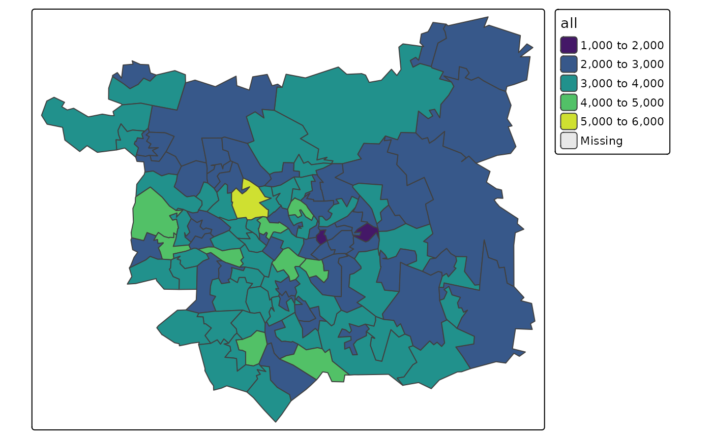
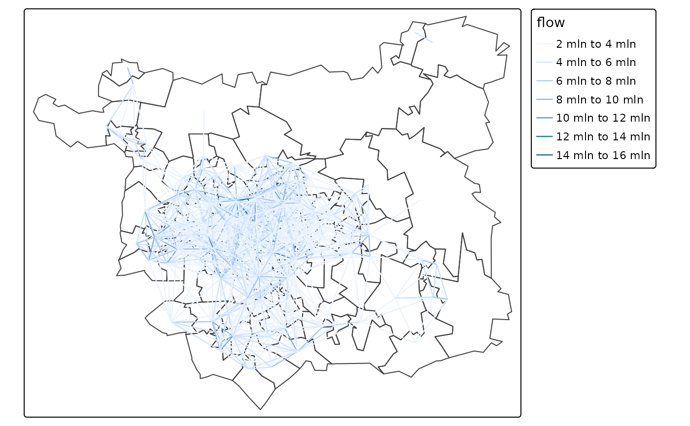
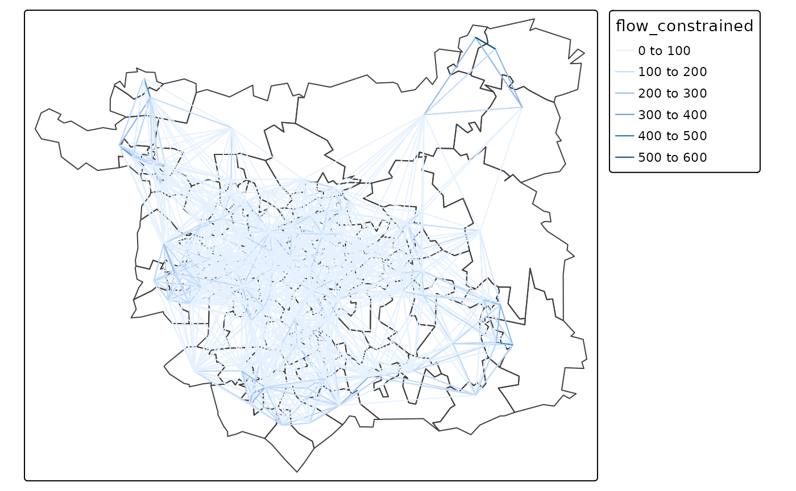

An introduction to spatial interaction models: from first principles
Source:vignettes/sims-first-principles.Rmd
sims-first-principles.RmdWhat are SIMs?
Spatial Interaction Models (SIMs) are mathematical models for estimating movement between spatial entities developed by Alan Wilson in the late 1960s and early 1970, with considerable uptake and refinement for transport modelling since then Boyce and Williams (2015). There are four main types of traditional SIMs (Wilson 1971):
Unconstrained
Production-constrained
Attraction-constrained
Doubly-constrained
An early and highly influential type of SIM was the ‘gravity model’, defined by Wilson (1971) as follows (in a paper that explored many iterations on this formulation):
“where is a measure of the interaction between zones and is a measure of the ‘mass term’ associated with zone , is a measure of the ‘mass term’ associated with zone , and is a measure of the distance, or generalised cost of travel, between zone and zone ”. is a ‘constant of proportionality’ and is a parameter to be estimated.
Redefining the terms as and for origins and destinations respectively (Simini et al. 2012), this classic definition of the ‘gravity model’ can be written as follows:
For the purposes of this project, we will focus on production-constrained SIMs. These can be defined as follows (Wilson 1971):
where is a balancing factor defined as:
is analogous to the travel demand in zone , which can be roughly approximated by its population.
More recent innovations in SIMs including the ‘radiation model’ Simini et al. (2012). See Lenormand, Bassolas, and Ramasco (2016) for a comparison of alternative approaches.
Implementation in R
Before using the functions in this or other packages, it may be worth
implementing SIMs from first principles, to gain an understanding of how
they work. The code presented below was written before the functions in
the simodels package were developed, building on Dennett (2018). The aim is to demonstrate a
common way of running SIMs, in a for loop, rather than using vectorised
operations (used in the simodels package) which can be
faster.
zones = simodels::si_zones
centroids = simodels::si_centroids
od = simodels::si_od_census
tm_shape(zones) + tm_polygons("all", palette = "viridis")
od_df = od::points_to_od(centroids)
od_sfc = od::odc_to_sfc(od_df[3:6])
sf::st_crs(od_sfc) = 4326
od_df$length = sf::st_length(od_sfc)
od_df = od_df %>% transmute(
O, D, length = as.numeric(length) / 1000,
flow = NA, fc = NA
)
od_df = sf::st_sf(od_df, geometry = od_sfc, crs = 4326)An unconstrained spatial interaction model can be written as follows,
with a more-or-less arbitrary value for beta which can be
optimised later:
beta = 0.3
i = 1
j = 2
for(i in seq(nrow(zones))) {
for(j in seq(nrow(zones))) {
O = zones$all[i]
n = zones$all[j]
ij = which(od_df$O == zones$geo_code[i] & od_df$D == zones$geo_code[j])
od_df$fc[ij] = exp(-beta * od_df$length[ij])
od_df$flow[ij] = O * n * od_df$fc[ij]
}
}
od_top = od_df %>%
filter(O != D) %>%
top_n(n = 2000, wt = flow)
tm_shape(zones) +
tm_borders() +
tm_shape(od_top) +
tm_lines("flow")
We can plot the ‘distance decay’ curve associated with this SIM is as follows:
summary(od_df$fc)
#> Min. 1st Qu. Median Mean 3rd Qu. Max.
#> 0.0002404 0.0256166 0.0801970 0.1495649 0.2035826 1.0000000
od_df %>%
ggplot() +
geom_point(aes(length, fc))
We can make this production constrained as follows:
od_dfj = left_join(
od_df,
zones %>% select(O = geo_code, all) %>% sf::st_drop_geometry()
)
#> Joining with `by = join_by(O)`
od_dfj = od_dfj %>%
group_by(O) %>%
mutate(flow_constrained = flow / sum(flow) * first(all)) %>%
ungroup()
sum(od_dfj$flow_constrained) == sum(zones$all)
#> [1] TRUE
od_top = od_dfj %>%
filter(O != D) %>%
top_n(n = 2000, wt = flow_constrained)
tm_shape(zones) +
tm_borders() +
tm_shape(od_top) +
tm_lines("flow_constrained")
Validation
od_dfjc = inner_join(od_dfj %>% select(-all), od)
#> Joining with `by = join_by(O, D)`
od_dfjc %>%
ggplot() +
geom_point(aes(all, flow_constrained))
cor(od_dfjc$all, od_dfjc$flow_constrained)^2
#> [1] 0.1735933